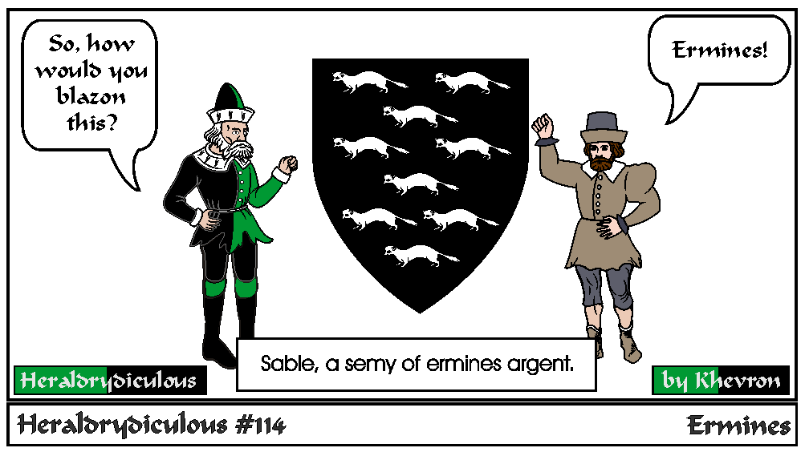
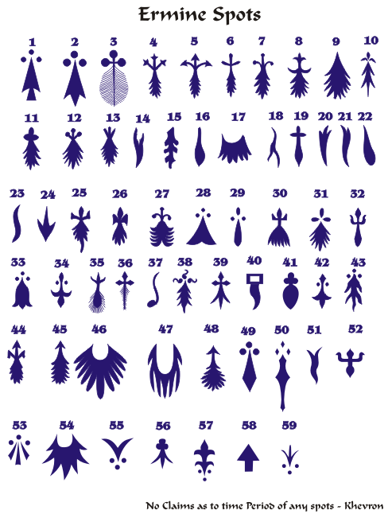

The animal ermine is the same as a weasel or ferret. Ermine is a fur and represents the tail of the ermine. Ermine is sable tails on an argent field, but other combinations are possible like
Counter-ermine, also known as Ermines (argent on sable), Erminois (sable on Or), Pean (Or on sable), vert ermined Or, Azure ermines argent, Argent ermined purpure.
The field tincture determines contrast (so you can as an Or charge to ermine, but not a vert one).
Ermine tails come in many shapes. A few are common like 1 and 2 (Use these on any submission forms!). There are more which are rare or post period:

e-mail: 
Back to Khevron's Heraldry Page